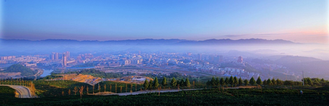

贵湄酒业，始建于50年代，坐落于自古享有"美酒之乡"盛誉的贵州省遵义湄潭县城。
湄潭县属亚热带湿润季风气候，夏季温暖湿润，春秋两季为冬季和夏季交替过渡季节，全年气候温和，年平均气温14.9摄氏度，
土壤中富含人体必需的锌、稀等微量元素和丰富矿物质，是白酒酿造得天独厚的风水宝地。湄潭人民就在这富饶的土地上传承
和创造了悠久、丰富的酒文化，为酿造美酒提供了得天独厚的生态自然环境。

贵湄酒业主要以高粱、小麦、大米、糯米、玉米为酿酒原料，用传统的老窖酿造工艺和高端生产技术酿造出质量上乘的白酒，各项理化、卫生指标符合国家理化卫生指标。
公司具备强有力的技术和富有激情、年轻化的管理队伍，完整的梯队建设体系，积极向上的企业文化。目前，公司国家级白酒专家组专家三名、高级工程师（享受国务院特殊津贴）一 名,省级评酒师二名，酿酒工程师三名,酿酒技工五十名,包装生产技术人员一百多名，管理人员二十多名,销售人员一百名，先进检测化验室两座,化验技师四 名,百分之六十员工具有大专以上文化程度。
贵湄酒业秉承国家标准白酒生产的技术要求、试验方法、检验规则、标志、包装、运输和储存等详细规定，以消费者为导向，坚守"质量承诺、价格承诺、货品承诺"――"三承"原则，稳步提高产品质量。
2014，一个更具朝气的企业将强势崛起！
公司简介
 贵州湄河酒业有限公司
贵州湄河酒业有限公司